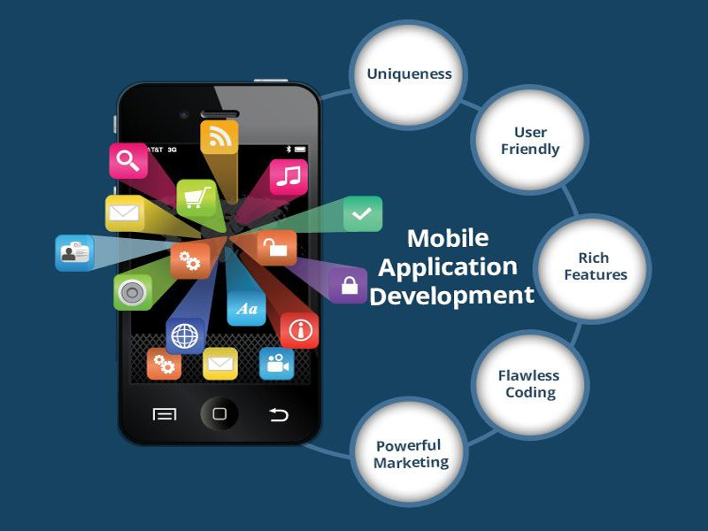

Como começar a programar em mobile
Uma das coisas que mais ouvimos de iniciantes seduzidos pelo mundo do desenvolvimento mobile:
“Decidi o que quero fazer da vida! Vou criar um app que vai viralizar e, com isso, ficarei rico!”
Logo que isso acontece, preparo um e-mail de 5 páginas tentando explicar toda a trajetória que um profissional precisa percorrer para chegar ao nível de um desenvolvedor mobile, tanto para plataformas Android, iOS ou qualquer outra. Provavelmente até perdemos o cliente após o e-mail. Existem três possibilidades:
1: A pessoa nem leu o e-mail e simplesmente decidiu trocar de escola de cursos de TI.
2: O indivíduo leu até o fim, chorou, quis me matar e, por fim, desistiu da ideia;
3: O profissional leu, entendeu e falou: “challenge accepted!”
